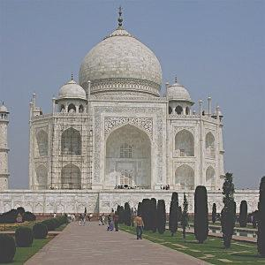
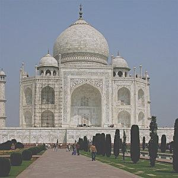
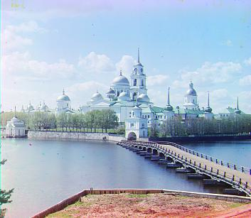
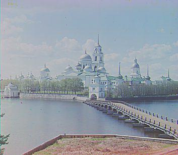
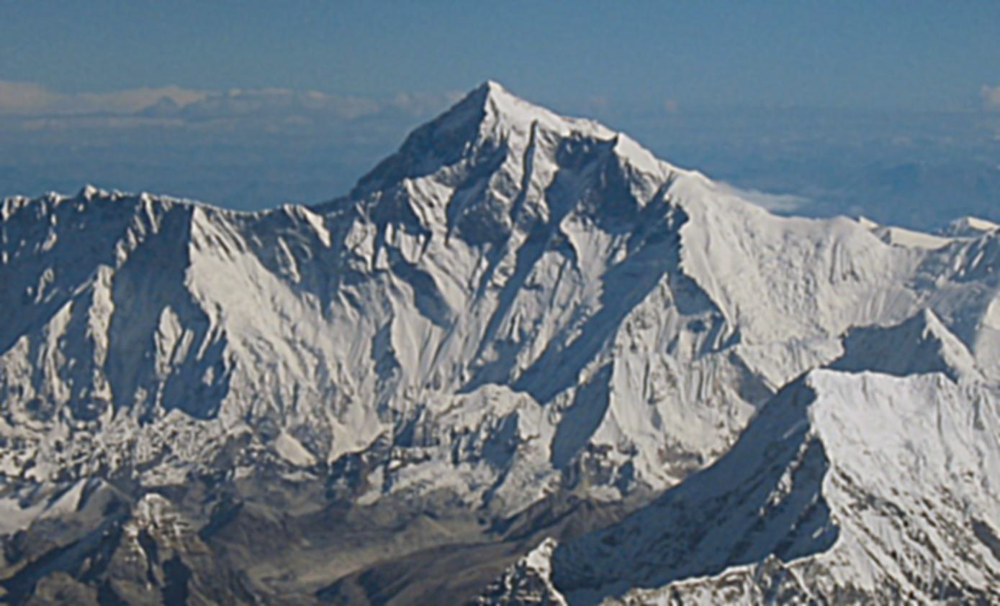

Sharpening Images
Approach Used and Results
Images to the left are original copies, the ones to the right are binarized with threshold \(h=0.17\). We are working with the first channel of cameraman.png. Given a grayscale imageim, we use scipy.signal.convolve2d(im,Dx,mode='same',boundary='symm') in order to compute the convolution of our image with some filter. Observe that \(f\star D_x\) can detect vertical edges, while \(f\star D_y\) can detect horizontal edges. Finally, in order to find the gradient magnitude image, we simply compute \(\sqrt{(f\star D_x)^2 + (f\star D_y)^2} \).
Taj Mahal \( (\alpha = 0.85, \sigma = 1.5, \text{ window size } k = 9) \)
 



Mount Everest \( (\alpha = 4, \sigma = 2.5, \text{ window size } k = 15) \)

Observations
For the imageeverest.jpg, notice that while sharpening the image brings back some contrast and a large number of the mountains features, there is still an element of blur (a net loss of information) from the blurring. The edges are not as sharp as before, and the colors are a bit off. Thus we see that sharpening does not really create any new information/details, but only rephrases the existing information in a way that produces an apparently "sharper" image.